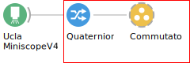
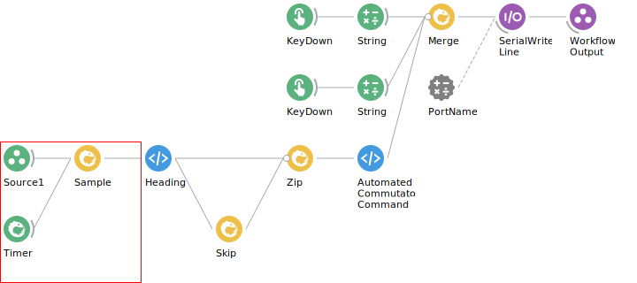
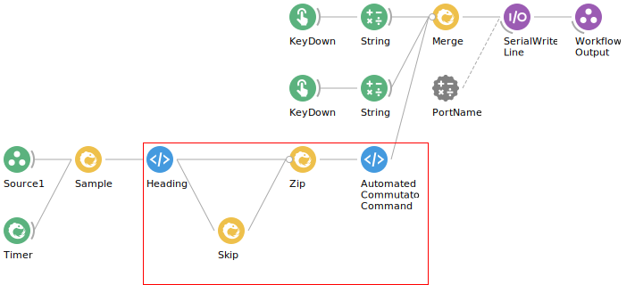
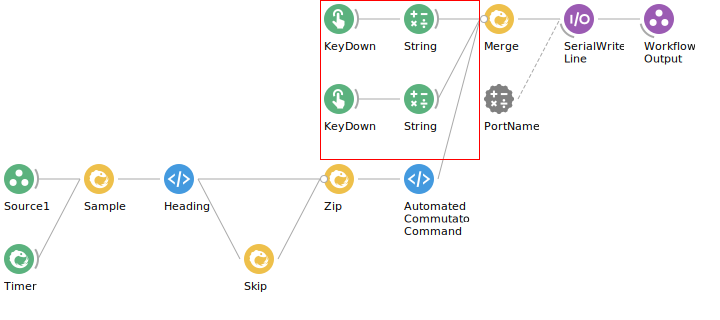
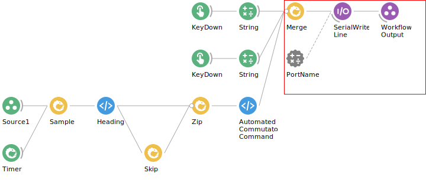

Workflow Description#
Note
This description assumes the reader has a foundation in Bonsai that is built on the Trigger Workflow Description. Start there if you have not already.
Commutator GroupWorkflow#
The
Quarternionnode connects to theCommutatornode. TheCommutatornode represents aGroupWorkflowoperator named Commutator. AGroupWorkflowoperator encapsulates a workflow fragment inside a single node. To inspect the encapsulated workflow fragment, double left-click theCommutatornode.A node’s border represents the scope of the corresponding operator. For instance, the dashed grey line around the
Commutatornode indicates it shares a scope with the “main” workflow. In contrast, a solid line would indicates it defines its own scope. For more information, refer to the Bonsai documentation on this subject.
Note
To learn more about a respective node, refer to the desciption in the Properties pane that appears after left-clicking the respective node. If the node has a name that is different from the name of the operator it represents, the operator name is presented in parenthesis after the node name.
Sample Quarternion Data#
The
Source1node represents aWorkflowInputoperator. AWorkflowInputoperator is a source operator that emits items passed to theGroupWorkflowfrom the parent workflow. In this case,Source1emits quarternion data that is what is passed to the input ofCommutator.The
Source1andTimernodes connect to theSamplenode. TheSamplenode emits the most recent upstream data at an interval specified by setting thePeriodvalue that appears in the Properties pane after left-clicking theTimernode (in this case, 100ms).
Generate Automated Commutator Command#
The
Samplenode connects to theHeadingnode. TheHeadingnode represents aPythonTransformoperator namedHeading. APythonTransformoperator contains a Python script for transforming items in an observable sequence. The script contained inHeadingtransforms quarternion data to a single quantity that represents direction the UCLA Miniscope v4 is heading. To inspect the script that performs this computation, double left-click theHeadingnode.The
Headingnode connects toZipandSkipnodes. TheSkipnode also connects to the theZipnode. TheSkipoperator skips a number of items in the observable sequence or upstream data as specified by theCountvalue that appears in the Properties pane after left-clicking theSkipnode (in this case, 1). TheZipoperator emits a combination of two inputs. In this case, theZipoperator emits the most recently sampled heading data and the sample before that. In other words, if theHeadingemits the \(nth\) item in an observable sequence,Zipemits items \((n, n-1)\).The
Zipnode connects to theAutomatedCommutatorCommandnode. TheAutomatedCommutatorCommandnode represents aPythonTransformoperator named AutomatedCommutatorCommand. The script contained inAutomatedCommutatorCommandtransforms current and previous heading data to a commutator command. To inspect the script that performs this computation, double left-click theAutomatedCommutatorCommandnode.
Generate Manual Commutator Command#
The
KeyDownnode represents aKeyDownoperator. AKeyDownoperator emits an item anytime a key/key combination specified by theFiltervalue that appears after left-clicking theKeyDownnode (in this case,Alt+RightandAlt+Left) is pressed.The
KeyDownnodes each connect to theStringnode.The
Stringnode represents aStringoperator. AStringoperator emits a string specified by theValuevalue that appears after left-clicking theStringnode (in this case,"{turn : 0.1}"and"{turn : -0.1}") anytime it receives an item from upstream item.
Send Commutator Command Over Serial#
The two
Stringnodes andAutomatedCommutatorCommandeach connect to theMergenode. TheMergenode represents aMergeoperator AMergeoperator merges multiple observable sequences into one.The
Mergenode connects to aSerialWriteLinenode. TheSerialWriteLinenode represents aSerialWriteLineoperator. ASerialWriteLineoperator writes serial messages appended with specified by theNewLinevalue that appears afer left-clicking theSerialWriteLinenode.
Note
Because SerialWriteLine operator is a sink operator, it doesn’t transform data. In other words, its output is equivalent its input, and the SerialWriteLine operator passes that data to the WorkflowOutput as-is to the downstream operator.
The
SerialWriteLinenode connects to aWorkOutputnode. TheWorkOutputnode represents aWorkOutputoperator. Items passed to theWorkOutputoperator are emitted by the corresponding group workflow’s node (in our case,Commutatorin the main workflow). This can be seen by double-clicking theCommutatornode while the workflow is running.